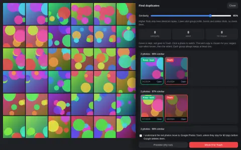

Free Chrome extension for Google Photos
Bulk delete Google Photos. Find the duplicates it misses.
Pick a view, preview exactly what will go, then delete thousands of photos in one run, in safe batches of up to 500. Everything runs in your browser.
On a phone? The extension runs in desktop Chrome. Open this page on your computer to install it.
- 4.7134 ratings
- 10,000+users
- MITopen source
Source: Chrome Web Store listing, 2026-10-01

Three steps, and you stay in control
- 1
Open the view
Your whole library, an album or a search in Google Photos. That view is the only thing the tool touches.
- 2
Dry run
It scrolls and counts what matches without clicking anything, so you see the number before you commit.
- 3
Delete in batches
Confirm once, then watch it work through batches of up to 500. Pause, resume or stop at any time.
Built so you never lose the wrong photo
Nothing runs until you confirm
The first real run asks you to confirm what is about to happen. Nothing is ever scheduled or unattended.
60 days to change your mind
Deleted photos go to Google Photos Trash, where you can restore them for 60 days. Emptying Trash is optional and always asked first.
Stops instead of guessing
If Google changes a button the tool cannot positively identify, it stops. It never clicks something it is unsure of.
Your photos stay on your computer
Everything runs in your browser. No photo, thumbnail or fingerprint is uploaded to us or anyone else.
Find the look-alikes Google keeps
Google Photos removes only exact copies. Resized, re-saved, lightly edited or twice-uploaded copies stay. Find duplicates groups them, keeps the best copy and marks the rest for Trash.
- Set how strict the match is with a similarity slider.
- Every group always keeps at least one photo. Click any photo to switch it.
- Free, and it works on tens of thousands of photos.
Why an extension
Since 31 March 2025, Google no longer lets apps read your whole library through the Photos API, so outside duplicate finders cannot scan your whole library. This tool works inside the Google Photos page you already have open.
Free for good. Pro when you clean up often.
Pro is US$9.99, paid once. No subscription, no account.
Free
US$0
- Bulk delete in batches of up to 500
- Dry run that clicks nothing
- Find duplicates, including look-alikes
- Optional Empty trash, checked afterwards
- Pause, resume and stop
- Interface in 10 languages
Pro
US$9.99 once
- Everything in Free
- Type filters: only screenshots, videos, photos, animations or collages
- Date filter: before, after or between two dates (dates shown in English or French)
- Up to 20 saved presets for cleanups you repeat
- Duplicate tools: keep the newest or oldest in every group, auto-accept groups 98% or more alike, CSV export
- Dry-run report with CSV export
Pro is a token you paste into the extension. It is checked on your device and works offline.
Questions
Can I undo a delete?
Yes, for 60 days. Deleted photos go to Google Photos Trash and you can restore them from there. The only permanent step is the optional "Empty trash afterwards", which asks you first.
Does it upload my photos?
No. It runs inside the Google Photos page in your browser. Find duplicates downloads small thumbnails only from Google's own servers, turns each into a fingerprint in memory and forgets it when you close the review.
Can I delete only part of my library?
Yes. Open an album or a search and the tool acts on that view only. Pro adds type and date filters for finer control.
Which browsers does it work in?
Desktop Chrome, and Chromium browsers that install from the Chrome Web Store. A userscript for Tampermonkey or Violentmonkey is on GitHub. It does not run on phones.
Is it made by Google?
No. It is made by Sylphx Limited and is not affiliated with or endorsed by Google.
How do I get help?
Email hi@sylphx.com or open an issue on GitHub.
Clear out your library today
Free, open source, and a dry run before anything is touched.
Add to Chrome, it's free